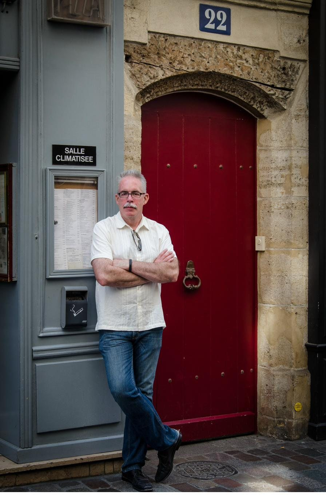
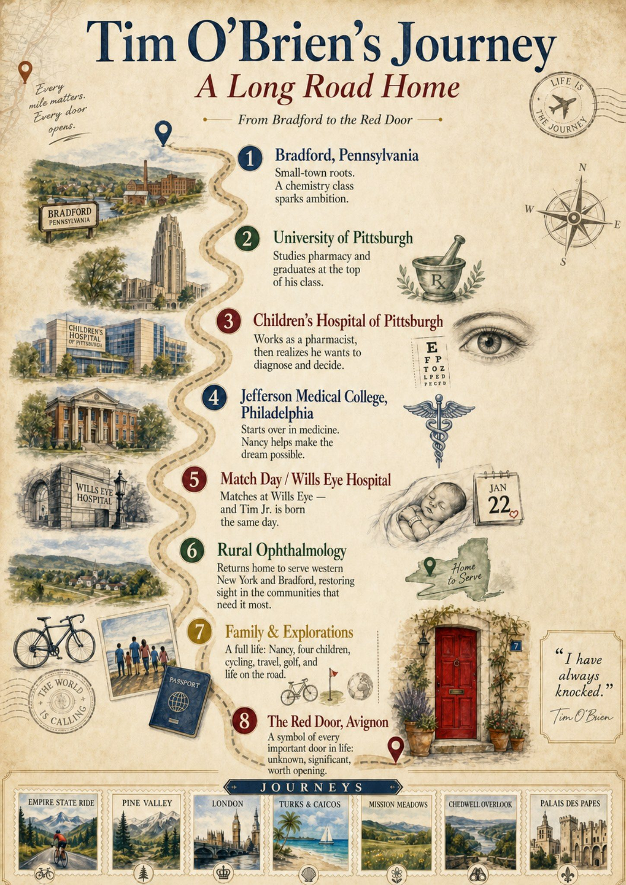

Vol. I · No. 1A Personal EditionChautauqua · Avignon · Bradford
Dispatches from the Road
notes from a life well traveled · Tim O'Brien

No. 22, Rue de la République · Avignon, France
From Bradford to Avignon · A Life
A Long Road Home
A first-generation college student from oil country becomes a surgeon, a husband, a father — and one day finds himself at a red door in the south of France with the long arc behind him.
By Timothy J. O'Brien, MD · Jamestown, NY
This is a portfolio of essays, photographs, and remembrances — the chapters of a life that began in a Pennsylvania oil town and led, eventually, to thirty years of cataract surgery in rural western New York. The doors below open to the places, people, and ideas that mattered along the way.
I grew up in Bradford, Pennsylvania — a small oil-country town in the northwest corner of the state, the kind of place where a good living meant steady work and nobody in my family had been to college. That was simply the world as it was, and it did not feel like a lack. But somewhere in high school, sitting in a chemistry classroom, something clicked. The logic of it, the precision, the way the physical world followed rules you could actually learn — I was good at it, and I knew I was good at it, which is a feeling that tends to point you somewhere.
The somewhere it pointed me was through the door of a local pharmacy. I walked in, watched the pharmacist behind the counter — the clean white coat, the authority, the decent living he was clearly making — and thought: that. That is what I will do. It was not a calling in any grand sense. It was a young man from Bradford doing the sensible thing with the one talent he had clearly identified. I am not ashamed of that. Practicality is its own kind of wisdom when you are starting from nothing.
The teacher who first showed me what chemistry could be was Richard Ambrose. He had that rare gift — the ability to make a subject feel alive rather than assigned — and I carried something of his example with me long after I left his classroom. Some teachers mark you without knowing it. He was one of those.
I went to the University of Pittsburgh for pharmacy, and I worked. I graduated at the top of my class and took a position at Children's Hospital of Pittsburgh — a serious institution, important work, the kind of job that by any reasonable measure I should have been proud to settle into. And I was proud of it. For a while.
But something began to nag at me, quietly at first and then louder. The decisions had already been made by the time the prescription reached my hands. The diagnosis, the treatment plan, the clinical judgment — all of it happened upstream, in rooms I was not in. I was executing, not deciding. And I realized, in that slow and uncomfortable way that real self-knowledge usually arrives, that what I wanted was to be in the room where the decisions were made. I wanted to look at a patient and figure out what was wrong and what to do about it. I wanted the full weight of it.
That recognition — that I had gone as far as pharmacy could take me and it was not far enough — was the first door. It was frightening to stand in front of it. I had a good job. I had a credential. Going back to nothing, starting over, competing for medical school against twenty-two-year-olds who had been pointed at medicine their whole lives — it was not obvious that this was a reasonable thing to do.
Years earlier, at the Bradford campus where I had started, my pre-pharmacy advisor had told me I was aiming too low. Thomas Gerteisen was his name — a chemistry professor, formally assigned to point me toward the pharmacy track, who looked at me across a desk one day and told me instead to apply to medical school. I had not taken the advice. I could not afford to. Coming from a family where no one had gone to college, medical school was not a door I could picture with any plan B behind it — pharmacy was a floor, a salary, a credential I could not fail back out of. So I had thanked him and kept my hand on the railing. But I had carried his words the way you carry a thing a serious person says to you in a serious voice, and now, standing in front of this second door with a credential finally in my pocket, I could hear him. He had seen it before I was able to afford to see it. When someone who has seen a lot of students looks at you and says you should push further, you carry it with you — through the years it takes to make his advice survivable, through the application, through the doubt.
Chapter III
The Door Opens: Jefferson
The letter from Jefferson Medical College in Philadelphia arrived, and everything changed at once — the way the best things in a life tend to change everything at once, not in tidy sequence.
I got married. Nancy was an operating room nurse at Children's Hospital of Philadelphia — skilled, steady, completely at home in the controlled intensity of a surgical suite — and it was her income that carried us through those early years of medical school while I was still becoming something. I have never forgotten that. There is a particular kind of partnership where one person holds the whole thing together while the other one reaches for something they cannot yet touch, and Nancy was that partner without complaint or condition. We moved to Philadelphia together and she went to work, and I walked into one of the oldest and most demanding medical schools in America with a pharmacy degree, a Bradford upbringing, and a wife who made it possible. Dr. Edward Jaeger, who had served as my medical school advisor, had seen something worth betting on. Nancy had already placed her bet.
Philadelphia was an education inside the education. The city's medical quarter — Jefferson, Pennsylvania Hospital, Wills Eye — was unlike anything I had encountered. Medicine practiced at that scale and density, with that history pressing against every wall, sharpened something in me. The clinical years especially: the rotations through internal medicine and surgery and the specialties, the patients who arrived with conditions I had only read about, the attending physicians who expected you to think on your feet. Bradford had not prepared me for it, and I would not trade a day of it.
Somewhere in those years, in the ophthalmology rotation, I found my answer. The eye is the one place in the body where you can look directly at living tissue — nerves, vessels, the retina — without surgery. It combined the precision I had always loved with a kind of intimacy that surgery in other fields rarely offered. And the possibility of restoring sight — of giving someone back the ability to see their grandchildren, to drive, to read — felt like the right way to spend a professional life. I was going to be an ophthalmologist.
Chapter IV
Match Day
There is a day in every medical student's fourth year called Match Day, when you learn where you will do your residency. Wills Eye Hospital in Philadelphia — the oldest eye hospital in the Western Hemisphere, founded in 1832, one of the most competitive ophthalmology residencies in the country — was where I wanted to be.
I matched at Wills Eye. And on that same day — that same extraordinary day — Tim Jr. was born.
I have thought about that day many times since. A son and a residency at the finest eye hospital in the country, arriving together before I had time to catch my breath from either. It did not feel like coincidence. It felt like the universe deciding, on my behalf, that there was no more time for waiting. I was a father and I was going to Wills Eye and that was the shape my life was going to take, all at once, ready or not.
Wills Eye made me the physician I became. The rigor of it, the volume and variety of pathology, the attending surgeons who held you to a standard that left no room for imprecision — it was the final shaping. By the time I finished, I knew what I was doing and I knew who I wanted to serve.
Chapter V
Home: Rural Ophthalmology
We came home. Rural western New York, with an office in Bradford too — back to the town that made me, as it turned out. The distances are real out here, the specialists are few, and patients drive an hour each way for care that in a city they could find on the next block. I understood that world from the inside. I had grown up in it, which meant I also understood what it meant to the people sitting across from me when someone simply showed up and did the work.
Rural ophthalmology is not glamorous medicine. The resources are limited, the referral networks are thin, and you routinely handle cases that in an academic center would be parceled out among three different subspecialists. You figure it out, because the alternative is that your patient drives three hours to Buffalo or Rochester, which many of them simply will not do, which means they go without. The challenges that once felt like constraints I came to see as the point. Being the person who is there, who shows up, who does the work in a place that needs it — that is a complete professional life. I am grateful for every year of it.
And through all of it: family. Nancy, who built a life alongside mine with the same steadiness I tried to bring to the office. Four children who grew up watching their father leave early and come home late and understood, I hope, what it was all for.
Timothy Jr. came into the world on Match Day and has been keeping pace with milestones ever since — Allegheny College, then the University of Buffalo for graduate school. Kaitlin followed her own exacting path: Allegheny College and then Boston University School of Law, her J.D. earned with the same determination that runs in this family. Michael made his way to the University of Utah, and Anna Christine walked through the doors of the Newhouse School at Syracuse, one of the finest communications programs in the country. Four children, four doors, four lives assembling themselves in the way lives do when the people living them are paying attention. They did what I did: figured out what they were good at, found the door that fit, and knocked. I could not be more proud of any of them.
Chapter VI
The Red Door
This photograph was taken in Avignon, in the south of France, on a trip that felt like the kind of reward a life earns after enough decades of early mornings. The door behind me is deep red, set into a limestone arch, numbered twenty-two. It is the door of a restaurant, in fact — the Salle Climatisée sign gives it away — but it does not look like a restaurant door. It looks like a door to somewhere significant. It looks like the kind of door you are not sure you should knock on.
That is what I want it to mean, standing here in front of it. Because that is what every door that mattered in my life looked like from the outside: significant, slightly forbidding, uncertain in what it promised. The pharmacy in Bradford. The application to Jefferson. The Match Day envelope. The decision to come home and practice in a place that needed a doctor more than it needed another specialist in a city full of them.
Nobody from Bradford had a map to any of those doors. I found them the way most people find the things that define them — by paying attention, by following what I was good at and what I cared about, by being lucky enough to have a teacher, a professor, an advisor, and a wife who believed the doors were worth opening.
I do not know what is behind the red door at No. 22. That, finally, is the whole point. You never do. You stand in front of it, arms crossed, and you decide whether you are the kind of person who knocks.
I have always knocked.
A cartography of the chapters
The Map

From Bradford, Pennsylvania to the south of France Click to enlarge
Doors to open
The Journeys
❦
Foundations
The institutions and decades that shaped a working life